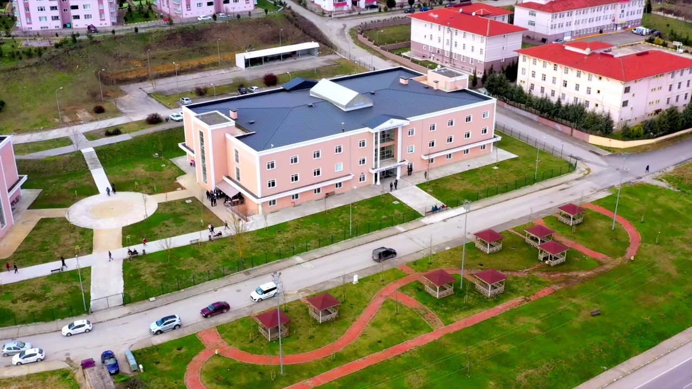

1970 li yıllarda İstanbul Teknik Üniversitesi tarafından kullanılan
binada hala eğitim öğretime devam etmekteyiz. O yıllarda mühendislik
fakültesi olarak kullanılan binamızda verilen eğitimler hem bölgede
hem de ülkede ses getiren çalışmaların alt yapısını oluşturmaktadır.

Bölümde en önemli yapı taşlarından olan eğitmenler bakımından hem
deneyim hemde bilgi birikimi açısından son derece şanslı olan bir
bölüm olarak kendimizi görebiliriz. Çünkü dört akademisyen okulumuzdaki
pek az bölümde olmakla birlikte akademisyenlerimizin özellikle özel
sektör ve ders verme tecrübelerinin olması ayrı bir kazanımdır.
- Öğr.Gör.İsmail Öylek
- Dr.Öğr.Üyesi Serkan Dereli
- Dr.Öğr.Üyesi Ferda Bozkurt
- Öğr.Gör.Özkan Canay
- Öğr.Gör.Gözde Gökpınar
Adres: Camili 15 Temmuz Mahallesi Üniversite Caddesi
A Blok No:3 B Blok No:5 54290 Camili-Adapazarı/SAKARYA
Telefon: 0 264 295 12 55
Faks: 0 264 295 12 88
Email: smyo@sakarya.edu.tr